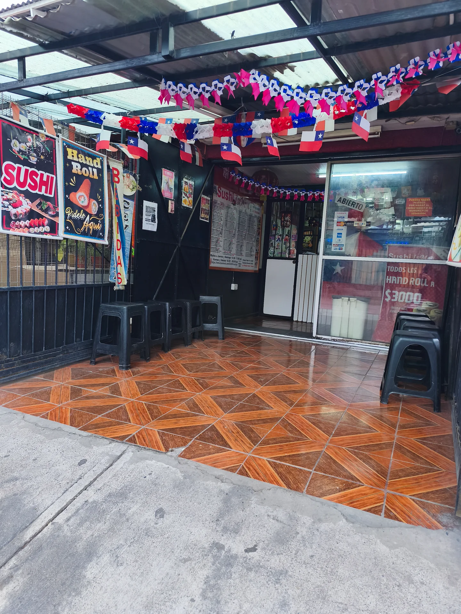

05 / UN CASO CERCANO
IsiMiya.
Identidad que conecta.
Una propuesta de aplicación para Sushi IsiMiya. Su identidad visual y variedad de productos ofrecen un punto de partida para trabajar una experiencia de atención consistente.

APLICACIÓN PROPUESTAPotenciar lo que ya
Potenciar lo que ya
hace especial al negocio.
- Una identidad reconocibleUn espacio con detalles y personalidad.
- Opciones para compartirUna carta con formatos individuales y familiares.
- Oportunidad de conexiónUn proceso de escucha que acompaña cada compra.
El trabajo con la pyme y sus resultados están pendientes de implementación y validación.
Ver carta en su página ↗